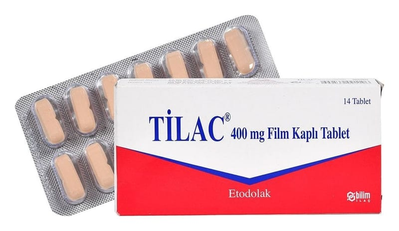

Tilac 400 mg Film Kaplı Tablet, 10 Tablet

Ne için kullanılır
KT · Bölüm 1TİLAC; etkin madde olarak etodolak içeren film kaplı tablettir. TİLAC iltihapla karakterize durumların tedavisinde kullanılan (steroid içermeyen antiinflamatuvar) ilaç grubundandır.
TİLAC, aşağıdaki durumların tedavisinde kullanılır: • Dejeneratif eklem hastalığı, eklem kireçlenmesi (osteoartrit), • Eklem iltihabı ile görülen romatizmal hastalık (romatoid artrit), • Özellikle omurga eklemlerinde birleşme ve hareket kaybı ile görülen romatizmal bir hastalık (ankilozan spondilit), • Proteinin parçalanmasındaki bir soruna bağlı olarak zaman zaman ani şekilde ortaya çıkan, sıklıkla ayak baş parmağındaki iltihapla kendini gösteren, eklemler üzerinde ileri derecede ağrıya, hassasiyete, kızarıklığa ve şişkinliğe neden olan eklem iltihabı (akut gut artriti), • Akut kas iskelet sistemi ağrıları, • Ameliyat sonrası görülebilen inflamasyon, şişkinlik ve yumuşak doku hasarı (post-operatif ağrı), • Kadınlarda adet sancılarına bağlı ağrılarda (dismenore).